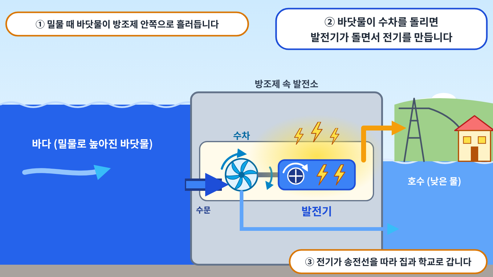

1해양 에너지는 무엇일까요?
해양 에너지는 바다가 가진 에너지를 말합니다. 바닷물은 하루에 두 번씩 높아졌다가 낮아집니다. 바닷물이 육지 쪽으로 밀려 들어와 높아지는 것을 밀물, 바다 쪽으로 빠져나가 낮아지는 것을 썰물이라고 합니다. 밀물 때와 썰물 때 바닷물 높이의 차이를 조수 간만의 차라고 하는데, 우리나라 서해안은 이 차이가 큰 곳으로 손꼽힙니다.
해양 에너지로 전기를 만드는 방법에는 여러 가지가 있습니다. 밀물과 썰물 때 바닷물 높이의 차이를 이용하는 조력 발전, 바닷물이 빠르게 흐르는 곳에서 물살의 힘을 이용하는 조류 발전, 파도가 오르내리는 힘을 이용하는 파력 발전 등이 있습니다. 이 가운데 우리나라에서 가장 많은 전기를 만드는 방법은 조력 발전입니다.
2해양 에너지로 어떻게 전기를 만들까요?

조력 발전소를 만들려면 먼저 바다의 한쪽을 방조제로 막아 커다란 호수를 만듭니다. 밀물이 되면 방조제 바깥의 바닷물이 안쪽 호수보다 높아집니다. 이때 수문을 열면 바닷물이 높은 곳에서 낮은 곳으로 세차게 흘러 들어가면서 수차를 회전시킵니다. 수차와 연결된 발전기가 함께 회전하면서 전기가 생산됩니다. 썰물이 되면 수문을 열어 호수의 물을 다시 바다로 내보냅니다.
우리나라의 대표적인 조력 발전소는 경기도 안산의 시화호 조력 발전소입니다. 2011년에 완공되었으며, 조력 발전소 가운데 세계에서 가장 큰 규모입니다. 이곳에서는 인구 50만 명이 한 해 동안 쓸 수 있는 전기를 만듭니다. 시화호 조력 발전소는 밀물 때에만 전기를 만듭니다.
3해양 에너지 발전의 좋은 점은 무엇일까요?
해양 에너지 발전은 연료가 필요하지 않습니다. 바닷물의 움직임은 사라지지 않으며, 전기를 만드는 과정에서 이산화탄소나 대기 오염 물질을 배출하지 않습니다. 또한 밀물과 썰물은 날마다 정해진 시간에 규칙적으로 일어납니다. 그래서 언제, 얼마나 전기를 만들 수 있는지 미리 알 수 있습니다. 시화호의 경우 조력 발전소가 생긴 뒤 바닷물이 더 많이 드나들게 되어, 오염되었던 호수의 물이 깨끗해지는 데에도 도움이 되었습니다.
4해양 에너지 발전에서 생각해 볼 점은 무엇일까요?
조력 발전은 조수 간만의 차가 큰 바다에서만 할 수 있어 설치 장소가 제한됩니다. 방조제를 쌓으면 바닷물의 흐름이 바뀌어 갯벌과 바다 생물의 생활 환경이 달라질 수 있습니다. 또한 바다에 큰 시설을 짓는 데에는 많은 비용과 시간이 듭니다. 전기를 만들 수 있는 시간이 밀물과 썰물 때로 정해져 있어, 전기가 필요한 때에 맞추어 원하는 만큼 만들기 어렵다는 점도 한계입니다.